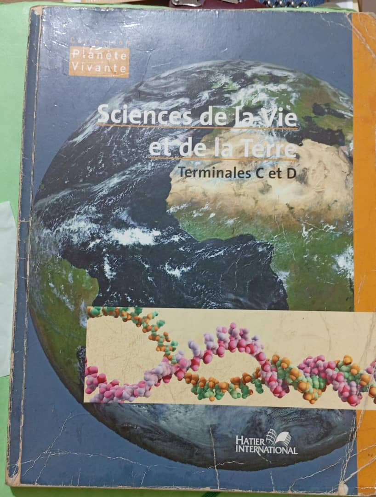

DÉPARTEMENT DES SVT
LISTE DE FOURNITURES PAR NIVEAUX
I- Cahiers
- 1 CAHIER 192 pages, TP grand format pour les niveaux 6ème, 5ème, 4ème, 2nde S et 1ères S, A1 et B
- 1 CAHIER 300 pages OU 2 CAHIERS 192 pages, grand format pour les niveaux 3ème et Terminale
II- Les Livres
- Premier cycle: MANUEL APC SI DISPONIBLE
- 3ème: BIOSPHÈRE SVT
- Second cycle: TAVERNIER POUR LA 2nde S et 1ères S
- SVT, R. TAVERNIER Terminale S, BORDAS
- Ou PLANÈTE VIVANTE SVT Terminales C et D, Hatier International
- + CAHIER DE COURS SVT Terminales C et D, collection SYNAPSE
III- Fournitures communes
Pour le 1er et le 2nd cycle
- 1 paquet de feuilles grand format pour les devoirs
- 1 paquet de feuilles petit format pour les interrogations
- 1 pot de colle
- 2 crayons à papier
- 2 stylos bleus, 2 stylos rouges
- 1 paquet de crayons de couleurs
- 1 règle
- 1 gomme
- 1 taille-crayon
- 1 couverture pour cahier grand format
Matériel et équipement
